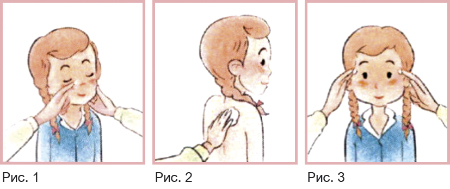

|
 |
| ДОКТОР МОМ® ФИТО (DOKTOR MOM® FITO) мазь д/наружного применения | ||||||||||||||||
|
Клинико-фармакологическая группа: Местнораздражающий препарат природного происхождения Номер и дата регистрации: П N016277/01 от 26.01.10 Код ATX: R05X |
Владелец регистрационного удостоверения: зарегистрировано Представительство: | |||||||||||||||
Форма выпуска, состав и упаковка ◊ Мазь для наружного применения полупрозрачная, белого или почти белого цвета, с запахом левоментола и камфоры.
Вспомогательные вещества: белый мягкий парафин - ск. треб. до 20 г. 20 г - банки полипропиленовые, укупоренные алюминиевой фольгой, ламинированной полиэтиленом, с навинчиваемой крышкой (1) - пачки картонные. | ||||||||||||||||
| ||||||||||||||||
Описание препарата основано на официально утвержденной инструкции по применению и утверждено компанией-производителем для издания 2023 г. | ||||||||||||||||
Фармакологическое действие |
Фармакокинетика |
Показания |
Режим дозирования |
Побочное действие |
Противопоказания |
Беременность и лактация |
Особые указания |
Передозировка |
Лекарственное взаимодействие |
Условия хранения и сроки годности |
Условия реализации
Фармакологическое действие
Оказывает местнораздражающее, отвлекающее, противовоспалительное и антисептическое действие. Показания
Режим дозирования
Только для наружного применения. При рините (насморке) или заложенности носа нанести мазь на кожу крыльев носа (рис 1). При болях в мышцах, спине нанести мазь на болезненную область. Для достижения лучшего результата прикрыть болезненную область теплой повязкой (рис.2). При головной боли нанести мазь на кожу височной области (рис.3).  Побочное действие
Аллергические реакции. Нежелательные реакции, выявленные при пострегистрационном применении препарата, были классифицированы следующим образом: очень часто (≥1/10), часто (≥1/100, <1/10), нечасто (≥1/1000, <1/100), редко (≥1/10000, <1/1000), очень редко (<1/10000), отдельные сообщения неуточненной частоты (частота возникновения не может быть оценена на основании имеющихся данных). Системные реакции: очень редко - гиперчувствительность (аллергические реакции), анафилактический шок. Со стороны дыхательной системы: очень редко - бронхоспазм. Местные реакции: очень редко - аллергический дерматит. Противопоказания
Применение при беременности и кормлении грудью
В связи с отсутствием опыта применения у беременных и кормящих женщин назначение препарата данной группе пациентов не рекомендуется. Особые указания
Если симптомы заболевания сохраняются или наблюдается ухудшение состояния, или возникают новые симптомы, пациенту необходимо прекратить использование препарата и обратиться к врачу. Препарат следует хранить в недоступном для детей месте. В случае проглатывания препарата ребенком следует немедленно обратиться за медицинской помощью. Следует избегать попадания мази в глаза, на слизистые оболочки носа и полости рта, а также на поврежденные участки кожи. Если лекарственное средство пришло в негодность или истек срок годности, не следует выбрасывать его в сточные воды или на улицу. Необходимо поместить лекарственное средство в пакет и положить в мусорный контейнер. Эти меры помогут защитить окружающую среду. Влияние на способность к управлению транспортными средствами и механизмами Препарат не влияет на способность к выполнению потенциально опасных видов деятельности, требующих повышенной концентрации внимания и быстроты психомоторных реакций (управление транспортными средствами, работа с движущимися механизмами, работа диспетчера и оператора). |
||||||||||||||||
Вернуться наверх |
||||||||||||||||
Copyright © Справочник Видаль «Лекарственные препараты в России», Москва, Россия